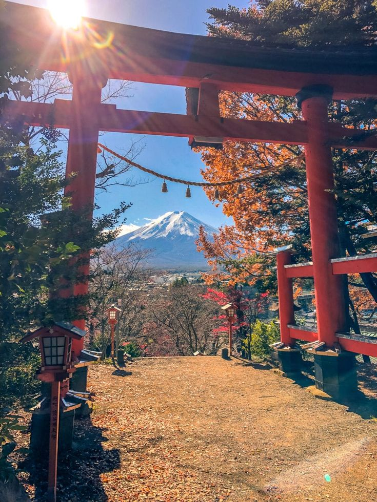
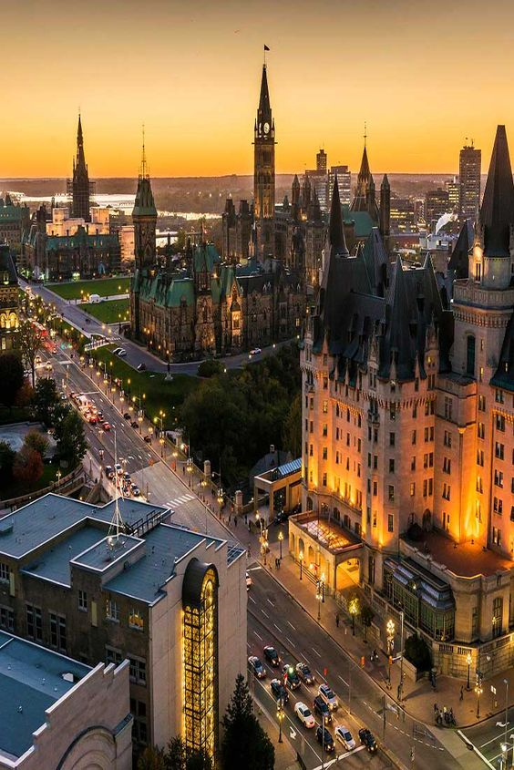

- Japón

Aunque Japón es conocido internacionalmente por sus ciudades tecnológicamente avanzadas, la mayor parte del país
está ocupada por una vasta extensión de colinas y montañas boscosas y hay mucha naturaleza para explorar.
Uno de los lugares más bellos para visitar es el icónico Monte Fuji.
No obstante, no hay que descartar una visita a los paraísos naturales menos conocidos, como el bosque de bambú de Arashiyama
o los jardines de Ritsurin en la isla de Shikoku.
- Canadá

Canadá es conocido por su ambiente seguro y hospitalario. Es un destino ideal para viajar con la familia o en solitario, ya que
no tendrás preocupaciones al respecto (aunque recuerda que, como siempre, es recomendable estar al tanto de tus pertenencias).
Los canadienses son reconocidos por su amabilidad y cortesía, lo que hace que sea fácil relacionarse y conocer gente nueva durante
tu tiempo libre.
- Quedarme en mi habitación
En mi cuarto hay muchísimas cosas entretenidas por hacer como tocar el piano, la guitarra, el ukulele, jugar videojuegos,
jugar con mis amigos, ver televisión, usar mi computadora, leer libros, escuchar música, entre otros.